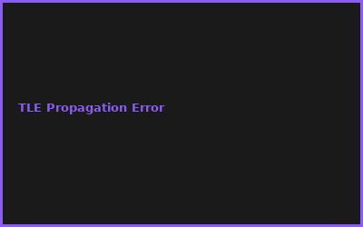
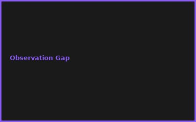
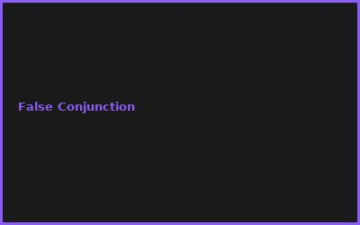
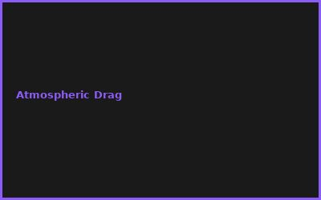

Kapitel 1: Orbital Mechanics
- Kepler's Laws & Two-Body Problem
- TLE (Two-Line Element) Format
- SGP4 Propagation Algorithm
- Orbital Elements (a, e, i, Ω, ω, ν)
Kapitel 2: Observation & Tracking
# Space Debris Tracking
# TLE propagation with PyEphem
from skyfield.api import Topos, load
ts = load.timescale()
satellite = EarthSatellite.from_line(tle_line1, tle_line2)
position = satellite.at(ts.now()).apparent_geocentric_position
Kapitel 3: Optical Detection
- Wide-Field Telescope Arrays
- Magnitude Estimation
- Light Curve Analysis
- Brightness Fluctuations (Spin)
Kapitel 4: Network Architecture
- Ground Station Network (GNSS)
- Radar & Optical Fusion
- Real-time Data Processing
- Uncertainty Quantification
Kapitel 5: Conjunction Assessment
- Probability of Collision (Pc)
- Gaussian Mixture Models
- Collision Warning Thresholds
- Evasive Maneuver Planning
Kapitel 6: Space Situational Awareness
- Global SSA Systems
- Debris Characterization
- Long-term Evolution Models
- Active Debris Removal Missions
💡 PRO-TIPPS
🎯 Tipp: TLE vor Eigener Vermessung
Problem: Observation = teuer | Lösung: Public TLE = kostenlos & aktuell
💰 BUDGET-HACKS (99% KOSTENLOS!)
💰 Hack: OpenSource SSA + Public Data
Original: Space Debris Tracking: €100K+ | Hack: Skyfield + NORAD TLEs: €0 | Einsparnis: 100%
⚠️ FEHLER
❌ Fehler: Veraltete TLEs nutzen
Was passiert: Vorhersage fehlerhaft | ✅ Lösung: Täglich TLE Updates
🌐 COMMUNITY
NORAD, ESA SST Program, Skyfield Forum, Satellite Tracking Community
📸 Fehler-Galerie



